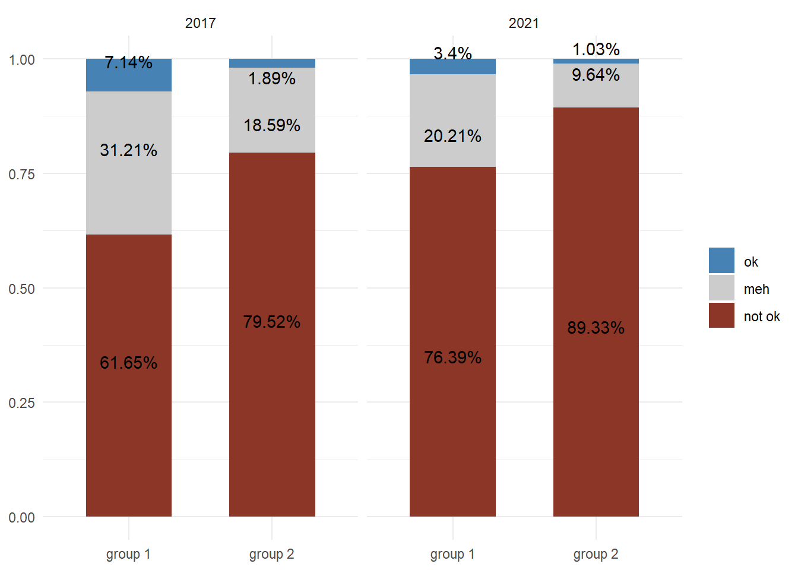
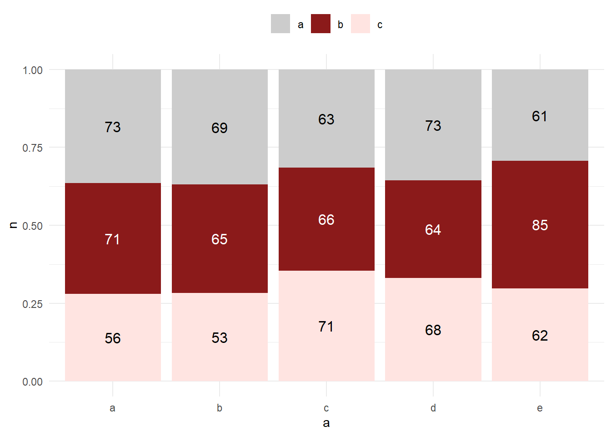

library(dplyr)
library(ggplot2)
graph_df <- data.frame(
target = c(rep("group 1", 6), rep("group 2", 6)),
year = c(rep(2017, 3), rep(2021, 3),rep(2017, 3), rep(2021, 3)),
att = factor(c(rep(c("ok", "meh", "not ok"), 4)), ordered = T, levels = c("ok", "meh", "not ok")),
value = c(.0714, .3121, .6165, .034, .2021, .7639, .0189, .1859, .7952, .0103, .0964, .8933)
)
graph_df %>%
ggplot(aes(x = target, y = value, fill = att)) +
geom_col(width = .6) +
geom_text(aes(label = paste0(value*100, "%")),direction = "y", position = position_stack(vjust = .5)) +
scale_fill_manual(values= c("ok"= "steelblue",
"meh" = "grey80",
"not ok" = "tomato4")) +
facet_wrap(~year) +
labs(x = NULL, y = NULL) +
theme_minimal() +
theme(legend.title = element_blank())2 text
This part deals with all text-related things in the format. Both in terms of typography and some rules about general writing. The font used throughout the report is Open Sans. The text hierarchy is defined below:
| level | font | size | styling |
|---|---|---|---|
| H1 - report title | Open sans | 2em | |
| H2 - main points | Open sans | 1.68em | |
| H3 - section title | Open sans | 1.41em | |
| H4 - subsection | Open sans | 1.1892em | |
| regular text | Open sans | 12pt | |
| caption | Open sans | 8pt | grey, name and number bold |
| axis titles | Open sans | 8.5pt | |
| axis text | Open sans | 8pt | |
| plot text | Open sans | 10pt |
2.1 Some additional rules and tips
avoid very long titles for reports
avoid very long section titles
make sure text does not overlap on plots ->
{ggrepel}package has a functiongeom_text_repel()which tries to adjust labels so that they don’t overlap. For example this plot has an issue with overlap:We can deal with this using
geom_text_repel(). Additional arguments likeforcecontrol how much the labels should be pushed from their original positions.library(ggrepel) graph_df %>% ggplot(aes(x = target, y = value, fill = att)) + geom_col(width = .6) + geom_text_repel(aes(label = paste0(value*100, "%")),direction = "y", position = position_stack(vjust = .5)) + scale_fill_manual(values= c("ok"= "steelblue", "meh" = "grey80", "not ok" = "tomato4")) + facet_wrap(~year) + labs(x = NULL, y = NULL) + theme_minimal() + theme(legend.title = element_blank())
ensure proper contrast for text:
For example the plot below does not have decent contrast when all text is in black:
b_df <- data.frame( a = sample(letters[1:5], 1e3, replace = T), b = sample(letters[1:3], 1e3, replace = T) ) %>% count(a,b) b_df %>% ggplot(aes(x = a, y = n, fill = b)) + geom_col(position = "fill") + geom_text(aes(label = n),direction = "y", position = "fill", vjust = 2) + scale_fill_manual(values = c("grey80", "firebrick4", "mistyrose")) + theme_minimal() + theme(legend.title = element_blank(), legend.position = "top")Warning in geom_text(aes(label = n), direction = "y", position = "fill", : Ignoring unknown parameters: `direction`We can fix that using
{ggfittext}andgeom_fit_text():library(ggfittext) b_df %>% ggplot(aes(x = a, y = n, fill = b)) + geom_col(position = "fill") + geom_fit_text(aes(label = n, fill = b), position = "fill", vjust = 2, contrast = TRUE, show_guide = FALSE) + scale_fill_manual(values = c("grey80", "firebrick4", "mistyrose")) + theme_minimal() + theme(legend.title = element_blank(), legend.position = "top")
Be accessible… Don’t write about logits. Opt for Average Marginal Effects in percentages instead. If possible try to get a sense of scale and some interpretation for the effects (maybe something like probability of superiority over cohen’s d etc.)
But remain scientific. Be precise, don’t overstate - this is scientific writing.